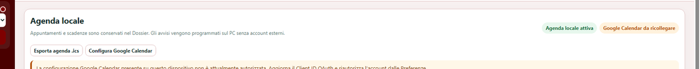
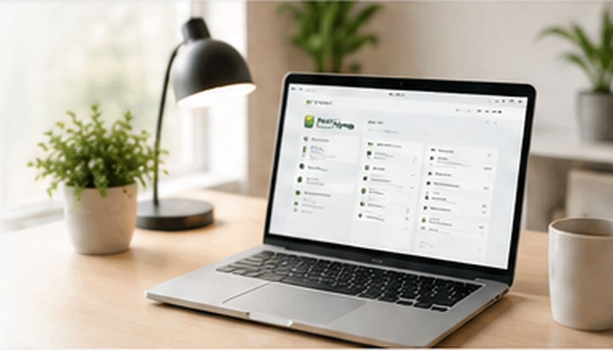
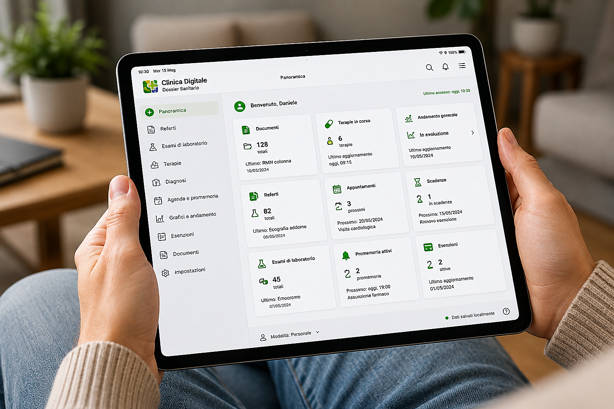
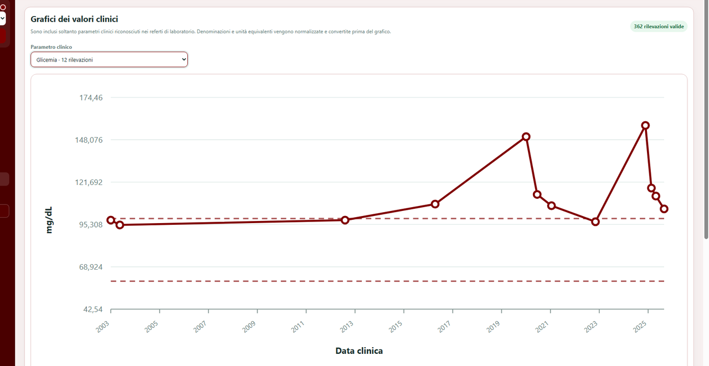

Agenda locale
Scadenze e collegamenti a calendari esterni restano organizzati a partire dal Dossier.
Clinica Digitale raccoglie, organizza e rende consultabili le informazioni sanitarie in modo semplice e strutturato, senza trasformare il Dossier in un sistema complicato da usare.

Referti, esami, immagini e documenti raccolti in un archivio ordinato e consultabile.
Farmaci, principi attivi, indicazioni e informazioni utili organizzate nel tempo.
Visite, esami, rinnovi, follow-up e più avvisi per lo stesso appuntamento.
Più profili nello stesso Dossier con dati, ruoli e informazioni separati.
Andamento storico dei principali parametri clinici e accesso ai documenti di origine.
Copie locali e strumenti cloud facoltativi per proteggere e sincronizzare il Dossier.
Un unico punto in cui ritrovare documenti, appuntamenti, terapie e informazioni che altrimenti resterebbero sparse tra file, cartelle e promemoria diversi.

L’Agenda raccoglie appuntamenti e richiami, mentre i grafici aiutano a seguire l’evoluzione dei valori clinici nel tempo.

Scadenze e collegamenti a calendari esterni restano organizzati a partire dal Dossier.

Visualizzazione dell'andamento dei valori nel tempo, mantenendo il legame con la documentazione sanitaria.
Sono previste la versione per Windows, la versione per macOS e le app dedicate per iOS e Android.